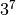
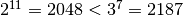

Largest exponential¶
Problem 99
Comparing two numbers written in index form like and  is not difficult, as any calculator would confirm that .
However, confirming that would be much more difficult, as both numbers contain over three million digits.
Using base_exp.txt (right click and ‘Save Link/Target As...’), a 22K text file containing one thousand lines with a base/exponent pair on each line, determine which line number has the greatest numerical value.
NOTE: The first two lines in the file represent the numbers in the example given above.
Solution
import math
import urllib.request
def sortExpPairs( aPairList ):
"""
>>> sample = [ (3,7), (2,11), (632382,518061), (519432,525806) ]
>>> list( sortExpPairs(sample) )
[(632382, 518061), (519432, 525806), (3, 7), (2, 11)]
"""
def valueOf( item ):
return math.log( item[0] )*item[1]
return sorted( aPairList, key=valueOf, reverse=True )
Test the module components.
def test():
import doctest
doctest.testmod(verbose=0)
Create the answer.
def answer():
# "http://projecteuler.net/project/base_exp.txt"
source= urllib.request.urlopen( "file:base_exp.txt" ).read().decode("ASCII")
data = [ tuple(map(int,pair.strip().split(',')))+(i+1,) for i, pair in enumerate(source.splitlines()) ]
return sortExpPairs(data)[0][2]
Confirm the answer.
def confirm(ans):
assert ans == 709, "{0!r} Incorrect".format(ans)
Create some output.
if __name__ == "__main__":
test()
ans= answer()
confirm(ans)
print( ans )